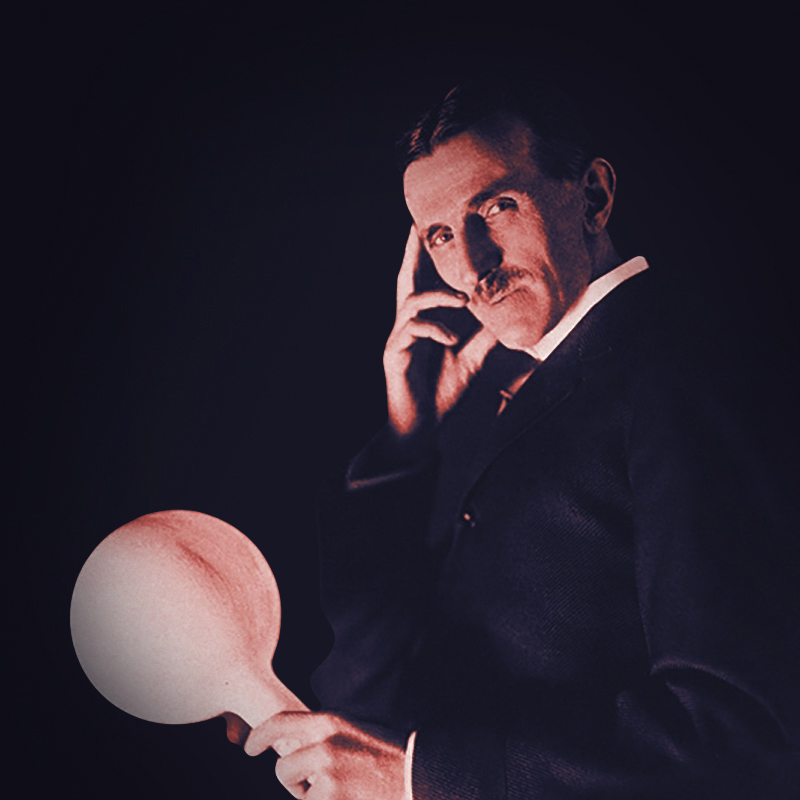
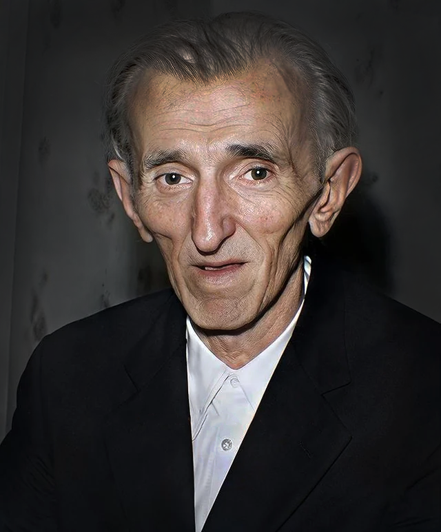

Biography
First steps
Tesla was from a family of Serbian origin. His father was an Orthodox priest; his mother was unschooled but highly intelligent. As he matured, he displayed remarkable imagination and creativity as well as a poetic touch.
Training for an engineering career, he attended the Technical University at Graz, Austria, and the University of Prague. At Graz he first saw the Gramme dynamo, which operated as a generator and, when reversed, became an electric motor, and he conceived a way to use alternating current to advantage. Later, at Budapest, he visualized the principle of the rotating magnetic field and developed plans for an induction motor that would become his first step toward the successful utilization of alternating current. In 1882 Tesla went to work in Paris for the Continental Edison Company, and, while on assignment to Strassburg in 1883, he constructed, after work hours, his first induction motor. Tesla sailed for America in 1884, arriving in New York with four cents in his pocket, a few of his own poems, and calculations for a flying machine. He first found employment with Thomas Edison, but the two inventors were far apart in background and methods, and their separation was inevitable.
Tesla vs Edison
In May 1888 George Westinghouse, head of the Westinghouse Electric Company in Pittsburgh, bought the patent rights to Tesla`s polyphase system of alternating-current dynamos, transformers, and motors. The transaction precipitated a titanic power struggle between Edison`s direct-current systems and the Tesla-Westinghouse alternating-current approach, which eventually won out.
Tesla soon established his own laboratory, where his inventive mind could be given free rein. He experimented with shadowgraphs similar to those that later were to be used by Wilhelm Rontgen when he discovered X-rays in 1895. Tesla`s countless experiments included work on a carbon button lamp, on the power of electrical resonance, and on various types of lighting.
In order to allay fears of alternating currents, Tesla gave exhibitions in his laboratory in which he lit lamps by allowing electricity to flow through his body. He was often invited to lecture at home and abroad. The Tesla coil, which he invented in 1891, is widely used today in radio and television sets and other electronic equipment. That year also marked the date of Tesla`s U.S. citizenship.
Westinghouse used Tesla`s alternating current system to light the World`s Columbian Exposition at Chicago in 1893. This success was a factor in their winning the contract to install the first power machinery at Niagara Falls, which bore Tesla`s name and patent numbers. The project carried power to Buffalo by 1896. In 1898 Tesla announced his invention of a teleautomatic boat guided by remote control. When skepticism was voiced, Tesla proved his claims for it before a crowd in Madison Square Garden.
Hard times
Returning to New York in 1900, Tesla began construction on Long Island of a wireless world broadcasting tower, with $150,000 capital from the American financier J. Pierpont Morgan. Tesla claimed he secured the loan by assigning 51 percent of his patent rights of telephony and telegraphy to Morgan. He expected to provide worldwide communication and to furnish facilities for sending pictures, messages, weather warnings, and stock reports. The project was abandoned because of a financial panic, labour troubles, and Morgan`s withdrawal of support. It was Tesla`s greatest defeat.
Tesla`s work then shifted to turbines and other projects. Because of a lack of funds, his ideas remained in his notebooks, which are still examined by enthusiasts for unexploited clues. In 1915 he was severely disappointed when a report that he and Edison were to share the Nobel Prize proved erroneous. Tesla was the recipient of the Edison Medal in 1917, the highest honor that the American Institute of Electrical Engineers could bestow.
After Tesla`s death the custodian of alien property impounded his trunks, which held his papers, his diplomas and other honors, his letters, and his laboratory notes. These were eventually inherited by Tesla`s nephew, Sava Kosanovich, and later housed in the Nikola Tesla Museum in Belgrade. Hundreds filed into New York City`s Cathedral of St. John the Divine for his funeral services, and a flood of messages acknowledged the loss of a great genius. Three Nobel Prize recipients addressed their tribute to "one of the outstanding intellects of the world who paved the way for many of the technological developments of modern times."
Main inventions
Alternating Current

Tesla Coil

Remote Controlled Boat

Tesla Turbine